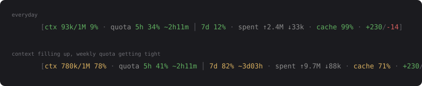

cc-token-statusline
A Claude Code status line badge for what a session is actually costing — context window, account quota with reset countdowns, cumulative tokens and cache hit rate.

Colors move on their own thresholds, so the line changes shape when something needs attention instead of reading the same at 9% and at 82%.
Install
/plugin marketplace add Alfafis/cc-token-statusline /plugin install cc-token-statusline@cc-token-statusline
Installing the plugin is not enough on its own: Claude Code reads statusLine only from settings.json, and no plugin can register one. The first session after install offers to do the wiring — say yes once and it is done.
Already using another status line? Claude Code allows exactly one command, so yours is wrapped instead of replaced: it runs first with the same payload, and the badge is appended to its output. It gets a short timeout and its failures are swallowed, so a slow or broken one cannot take the bar down. --replace drops it, --uninstall puts it back.
What each segment means
| Segment | Reads | Why it earns the space |
|---|---|---|
ctx | Context window used against the model's limit | The only value that goes down as well as up. Yellow at 60%, red at 85% — you see the wall before hitting it. |
quota | Both account rate limit windows, 5h and 7d | Account-wide, not per session. Each window carries its own countdown, so a reset is never read against the wrong clock. The 5h one is always shown — it is the window that stops the session you are in; the 7d one appears once it passes 70%. |
spent (off by default) | Cumulative billed input and output for the session | Consumption since the start, as opposed to the occupancy ctx measures. |
cache (off by default) | Share of billed input served from cache | Higher is better. A rate falling through a long session means something large and unstable near the top of the prompt is invalidating the cache each round. |
lines (off by default) | Lines added and removed | The size of what was actually changed, next to what it cost to change it. |
Only the first two are on by default, because the badge is there to say whether you can keep going and only they answer that. spent, cache and lines are on the same footing as cost (reports 0 on subscription plans in some setups), api (time already spent waiting — nothing you do next changes it) and sub (a running total for work that already happened): all six are implemented and off. Name any of them in CC_TOKENS_SEGMENTS and it comes back.
There is a second reason to leave spent, cache and sub off: they are the only segments read from the transcript, so a badge without them never opens it and never writes a session cache. Everything the default set prints comes from the payload Claude Code already hands over.
How the numbers are obtained
Context, quota and edited lines arrive in the status line JSON payload. Cumulative tokens, cache hit rate and subagent spend do not, so the session transcript is parsed — but only when one of those three is asked for, which the default set never does. Two details decide whether that parse is correct and cheap:
- Deduplication. Assistant entries repeat once per streamed content block, each copy carrying the full
usageobject. Summing them blindly overcounts by 2–3×. Every request is counted once, keyed byrequestId. - Incremental reads. The status line re-renders constantly, so the parse resumes: byte offset and running totals are cached per session, and only new bytes are read. A trailing partial line is left for the next run, because Claude Code appends to that file while the badge renders.
Any error prints nothing and exits 0 — a non-zero exit would hide the entire status bar, so a bug here degrades to an empty badge rather than a broken terminal.
Full breakdown
The badge is a glance. For the numbers behind it, /token-report prints fresh input, cache writes, cache reads, output, thinking tokens and subagent totals for the session, then both quota windows and the time left on each.
Configuration
Everything is an environment variable, settable in the env block of settings.json.
| Variable | Default | Effect |
|---|---|---|
CC_TOKENS_LANG | en | Label language: en or pt. Segment keys never change with it. |
CC_TOKENS_SEGMENTS | ctx,quota,tok,cache,lines | Which segments, in order. Add cost, sub or api to get them back. |
CC_TOKENS_WIDTH | terminal width − reserve | Hard cap on badge width. Worth pinning: stdout is a pipe, so terminal size has to be guessed. |
CC_TOKENS_RESERVE | 34 | Columns left for other badges sharing the line. |
CC_TOKENS_COLOR | 1 | 0 disables color. NO_COLOR works too. |
CC_TOKENS_ASCII | unset | 1 forces ASCII glyphs. Applied automatically on consoles that cannot encode the originals. |
When the badge does not fit, segments are dropped in a fixed order: api → lines → sub → spent → cache → cost → quota → ctx. Turning a name on does not spare it from that order, which is why the list covers every segment and not just the two defaults. Cache outranks the running total on purpose — a hit rate is actionable, a scoreboard is not.
Footprint
- No network access, no MCP server, no credentials.
- Reads the local session transcript; writes token counters and the last quota reading to
~/.claude/statusline-cache/. No prompt or response content is stored. - python3 standard library only, no third-party dependencies. No shell in the runtime path, so it behaves the same on Windows.
- 132 tests on Linux and macOS, 137 on Windows, all three in CI, plus
claude plugin validate --stricton both manifests.